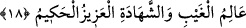

müşahede eden, emrine aykırı davrandıklarını gören sonra da gazabı kendisini
kışkırtmayan, kendisine gayz gelmeyen ve bu gayzı kendisini hızla intikam almaya
sevketmeyendir. Oysa kendisinin son derece gücünün yanında hızla ve çabucak intikam
alabilme yeteneği vardır. Nitekim bu konuda Yüce Allah bir başka âyet-i kerimede
şöyle buyurur: “Eğer Allah, insanları zulümleri yüzünden cezâlandıracak olsaydı,
yeryüzünde hiçbir canlı bırakmazdı” (en-Nahl16/61)
Rivâyet olunur ki: Hz. İbrahim (a.s.) göklerin ve yeryüzünün melekûtunu “göklerdeki
hükümranlığını ve hükümranlığının azametini” gördüğü zaman günahı içersinde bir
isyankâr görür ve “Allah’ım bunu helâk eyle” der, Allah da onu helâk eder. Sonra bir
başkasını görür ona da bedduâ eder, Allah Teâlâ onu da helâk eder. Ardından bir
diğerini görür yine bedduâ eder, Allah Teâlâ yine onu da helâk eder. Sonra bir
dördüncüsünü görür aynı şekilde ona da bedduâ eder. Allah Teâlâ: “Dur ya
İbrahim”diye vahyeder. Yüce Allah sözüne devamla “eğer biz gördüğümüz her
isyankârı helâk edersek yaratıklar arasında hiçbir kimse kalmaz. Fakat biz hilmimizle
onlara azap etmiyoruz, tam tersine onlara mühlet veriyoruz. Ya tevbe ederler, ya da
isyanlarında ısrarlarına devam ederler. Böyle yaparlarsa bizden hiçbir şeyi eksiltmiş
olmazlar” der.
Derler ki: Hilim âfetlerin perdesidir. Hilim ahlâkın tuzudur.
Adamın birisi eş-Şa’bi’ye kötü söz söyler. Şa’bi adama, “eğer yalan söylüyorsan
Allah seni bağışlasın, eğer sözünde doğruysan Allah beni mağfiret eylesin” der.
el-Ahnef hilim konusunda darb-ı mesellere konu olmuş birisidir. O şöyle derdi; Ben
çok sabırlıyım, fakat halîm değilim. Halîm ile sabûr arasındaki farka gelince günahkâr
olan kimse sabûr yâni sabırlı sıfatı açısından cezâ almayacağından emin değildir. Oysa
halim sıfatı açısından bundan emin olabilir. Bir başka ifâdeyle sabûr sıfatı âhirette
cezâlandıracağını ifâde ederken halim böyle değildir. Nitekim el-Mefâtîh isimli kitapta
böyle açıklanmaktadır. Allah’ın Halîm ismiyle ahlâklanmak demek, insanların
işledikleri suçları affetmek, yaptıkları kötü fiil ve davranışları hoşgörmek demektir.
Hatta bu hareketlerine hilim ve gufranın gerçekleştirilmesi açısından ihsan ile mükâfat
vermek demektir.
el-Erbaûn el-İdrisiyye’de şu satırları görüyoruz: Ey halim ve vakar sâhibi olan
yaratıklarından hiçbir şey buna denk değildir. Sühreverdi (r.h) der ki; Allah’ın Halîm
ismini kim zikrederse sözü makbul olup, bol hürmet görür. Şiddetlerde ve musibetlerde
güçlü ve dayanıklı olur. Şöyle ki hiçbir yırtıcı hayvan veya başka bir yaratık onun
karşısına dikilmeye cesâret edemez.